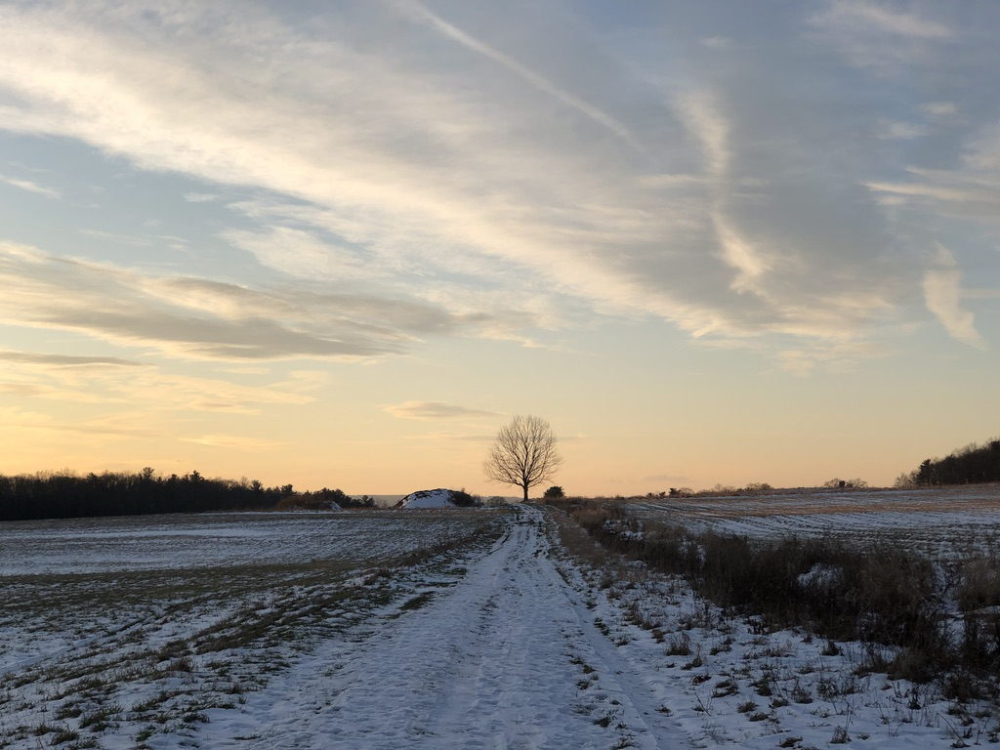
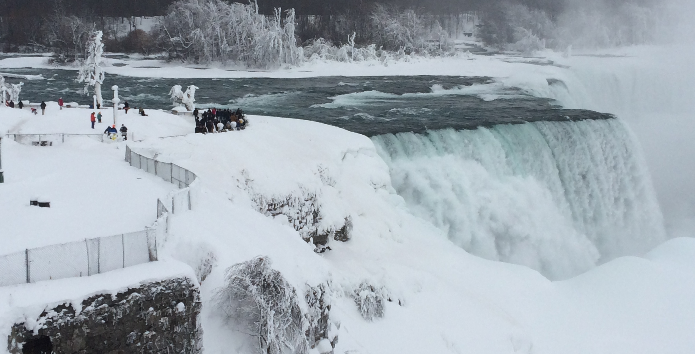

Civil Engineer &
Hydrologist.
I specialize in physical hydrology, flood modeling, and environmental data visualization. Currently based in the Twin Cities.

Fall Creek Current Conditions | Ithaca, NY
USGS 04234000 • Ithaca, NY • Past 7 Days
Loading...

Ithaca, NY 2020-2025
Ph.D. from Cornell University in Civil & Environmental Engineering. My research focused on physical hydrology, specifically flood interaction and land surface parameterization.
Berkeley, CA 2019
M.S. in Civil & Environmental Engineering from UC Berkeley. The Bay Area sent me on my current trajectory into environmental fluid mechanics and hydrology.

Buffalo, NY 2018
B.S. in Civil & Environmental Engineering at the University at Buffalo. This is where I cut my teeth with research, focusing on disinfection byproducts from algae chlorination.